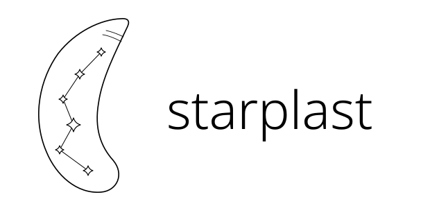
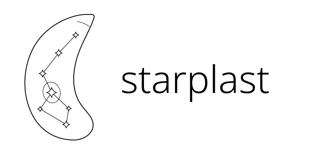
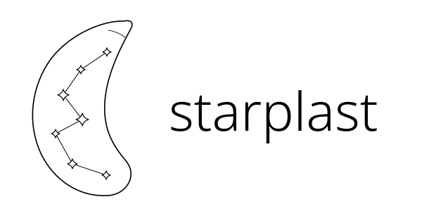
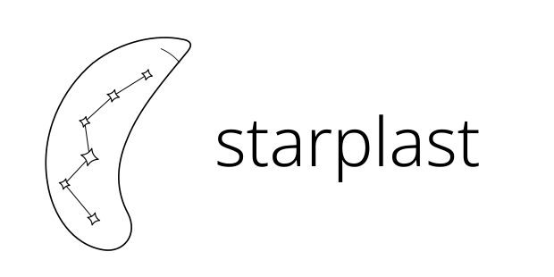
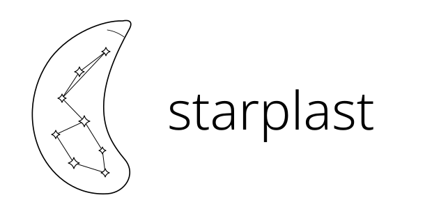
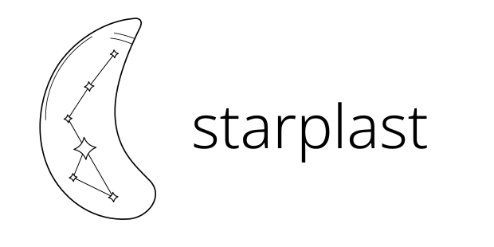
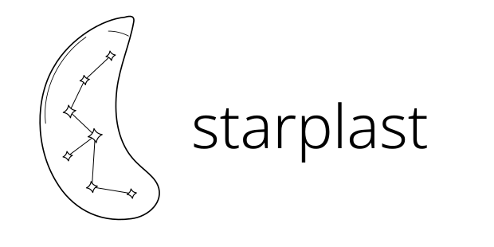
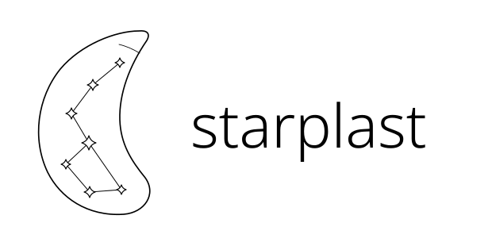

01 / Quiet arc

A cleaner version of the original, with more space around the stars.
Each version keeps the asymmetric Toxoplasma silhouette, softly rounded ends, thin monochrome lines, and an obvious connected constellation. The stars represent a gene network, not cell anatomy.

A cleaner version of the original, with more space around the stars.

A slender body and six stars following one uninterrupted path.


The central star sits inside a small tilted nucleus ring.

A wider interior gives the constellation a clearer zigzag shape.
A fine inner membrane traces the cell beside a branching network.

A gentle tilt and a small apical cap give the mark a sense of movement.

Two small groups of stars meet across the centre of a rounded cell.

One larger star anchors a quieter, sparse constellation.

A softly rounded silhouette with a short, delicate membrane echo.

A fuller body and seven balanced stars for smaller uses.